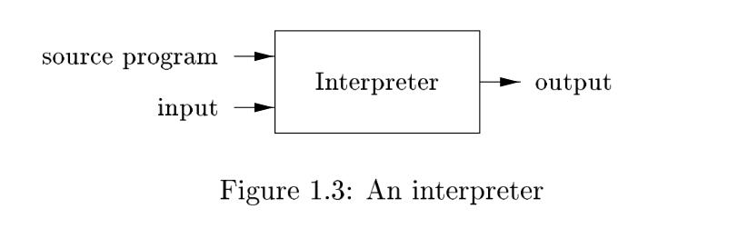
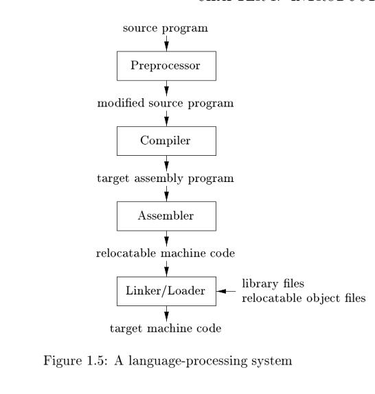

1.1 Language Processors#
Simply stated, a compiler is a program that can read a program in one language--the source language--and translate it into an equivalent program in another language--the target language; see Fig. 1.1. An important role of the compiler is to report any errors in the source program that it detects during the translation process.
See also: Compiler

If the target program is an executable machine-language program, it can then be called by the user to process inputs and produce outputs; see Fig. 1.2.
See also:

NOTE: The compiler definition given here is very broad because target programs can take many forms, not just executable machine-language programs. As stated in article Is Python interpreted or compiled? Yes.:
Compiling is a more general idea: take a program in one language (or form), and convert it into another language or form. Usually the source form is a higher-level language than the destination form, such as when converting from C to machine code. But converting from JavaScript 8 to JavaScript 5 is also a kind of compiling.
In Python, the source is compiled into a much simpler form called bytecode.
An interpreter is another common kind of language processor. Instead of producing a target program as a translation, an interpreter appears to directly execute the operations specified in the source program on inputs supplied by the user, as shown in Fig. 1.3.

The machine-language target program produced by a compiler is usually much faster than an interpreter at mapping inputs to outputs . An interpreter, however, can usually give better error diagnostics than a compiler, because it executes the source program statement by statement.
NOTE: Executing the source program statement by statement is the feature of interpreter and it is impossible for advanced programming language to be so.
Typical interpreter is shell:
- bash
- redis server's execution of command committed by the client can also be seen as an interpreter just as shell
Java language processors combine compilation and interpretation, as shown in Fig. 1.4. A Java source program may first be compiled into an intermediate form called bytecode. The bytecodes are then interpreted by a virtual machine. A benefit of this arrangement is that bytecodes compiled on one machine can be interpreted on another machine, perhaps across a network.
See also:
In order to achieve faster processing of inputs to outputs, some Java compilers, called just-in-time compilers, translate the bytecodes into machine language immediately before they run the intermediate program to process the input.
See also:

NOTE: language processor：
- compiler, such as c,
c++- interpreter, such as shell script
- hybrid compiler, such as python and java
NOTE: Python is similar to Java in combining compilation and interpretation, but there are difference between the two language. The following is an good article explaining python implementation:
This post is very informative and clear and can help understand the content in this chapter.
In addition to a compiler, several other programs may be required to create an executable target program, as shown in Fig. 1.5.

NOTE: This book focus only on compiler and the others is not included.
NOTE: 以下是一些补充内容，在一些文章中可能会提到：